Облачный
самолёт
Одно крыло построишь сам, а Blender покажет его близнеца. Узнаем, как моделировать симметрично — как настоящие 3D-художники!
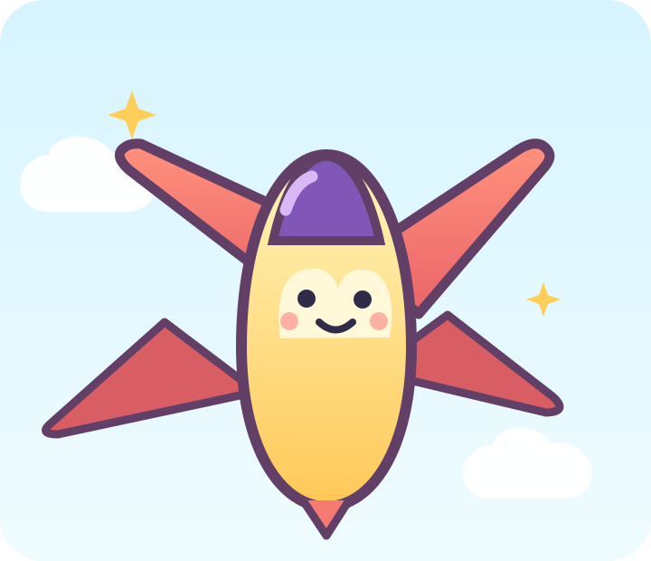
Куда летим?Одно крыло — два крыла
Симметрия означает, что справа и слева части похожи, как в зеркале. В Blender модификатор Mirror показывает отражение построенного крыла. Поменяешь своё крыло — отражение изменится вместе с ним. Оно остаётся редактируемым: кнопку Apply нажимать не нужно.
Проверь глазами: покажи исходное крыло и его отражение. Что случится со вторым, если удлинить первое?
Корпус для путешествия
Начнём с шара. Ты уже умеешь менять размер и место предмета — теперь сделай длинный корпус.
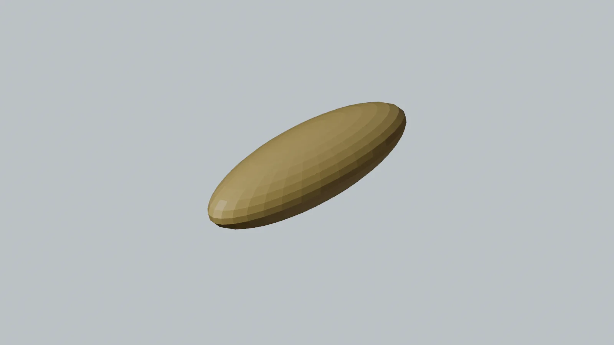
Это пока только корпус
Крылья появятся позже. Сегодня не нужны точные размеры.
Освободи сцену и добавь шар
В новой сцене выбери стартовый куб, нажми X и подтверди удаление. Открой Add → Mesh → UV Sphere. Если удалять куб не хочется, взрослый может начать новую пустую сцену.
Покажи мне: длинный корпус
Подсказки из Blender 5.2. Нажми на картинку, чтобы рассмотреть её крупнее. Твоя модель может выглядеть иначе.
Растяни и подними
Выбери шар. Нажми S, потом Y и потяни мышь: он станет длинным спереди назад. Щёлкни. Затем G, Z подними его над сеткой. Можешь назвать переднюю часть носом, а заднюю хвостом.
Покажи мне: где нос и хвост
Подсказки из Blender 5.2. Нажми на картинку, чтобы рассмотреть её крупнее. Твоя модель может выглядеть иначе.

Что у меня получилось
Сделай одно крыло
В прошлой неделе ты менял выбранную грань. Теперь в Edit Mode передвинем всю форму нового куба, а его центр останется посередине.
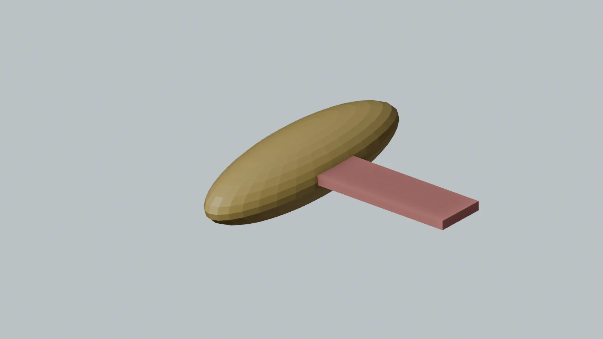
Крыло пока одно
Оранжевая точка в центре — важная подсказка для будущего зеркала.
Добавь куб точно в центр
Убедись, что круглый 3D-курсор остался в центре сетки. В Object Mode выбери Add → Mesh → Cube. Новый куб появится в центре, даже если шар корпуса находится выше.
Покажи мне: куб в центре
Подсказки из Blender 5.2. Нажми на картинку, чтобы рассмотреть её крупнее. Твоя модель может выглядеть иначе.
Новое крыло начинается с куба
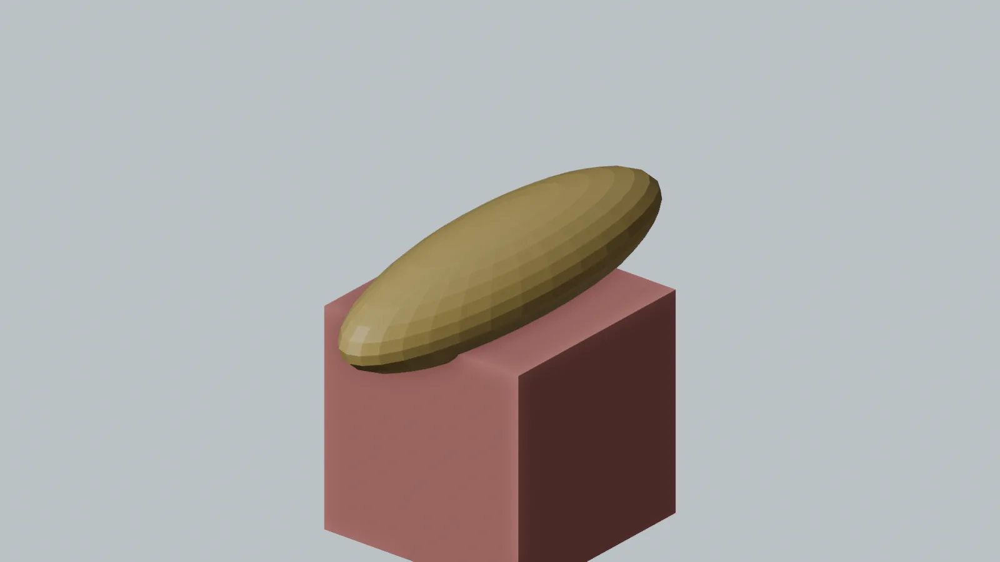
Проверь, что 3D-курсор остался в центре сетки. В Object Mode добавь куб. Оранжевая точка — его центр, место будущего зеркала.
Проверь: Куб находится в центре. Не передвигай весь предмет в Object Mode.
Сделай плоскую пластинку
Не двигай весь куб. Наведи мышь на большое окно и нажми Tab, чтобы войти в Edit Mode. Нажми A (выбрать всё). Сделай куб длинным поперёк самолёта через S, X, узким через S, Y и тонким через S, Z. Взрослый может помогать с двумя последними действиями.
Покажи мне: форма крыла
Подсказки из Blender 5.2. Нажми на картинку, чтобы рассмотреть её крупнее. Твоя модель может выглядеть иначе.
Форму куба меняем в Edit Mode
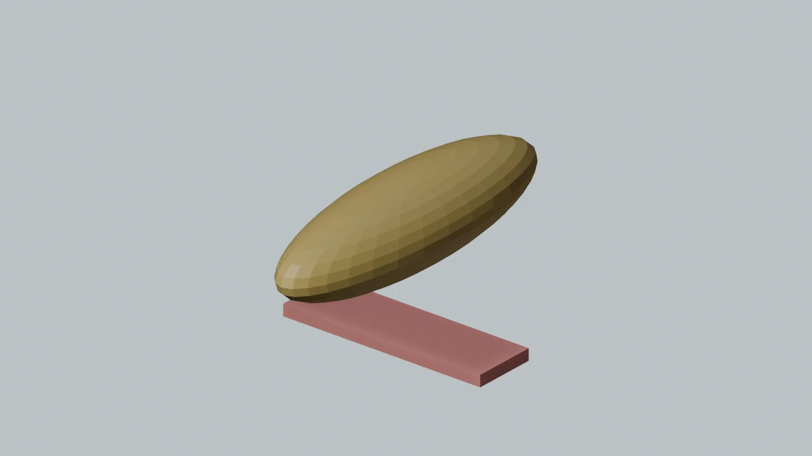
Нажми Tab, затем A, чтобы выбрать весь куб. Растяни его вдоль красной X через S, X; сделай узким через S, Y и плоским через S, Z. В этой миссии взрослый может помогать с клавишами.
Проверь: Куб стал длинной тонкой пластинкой для одного крыла.
Передвинь форму, оставив центр
Пока ты ещё в Edit Mode, нажми G, X и отведи пластинку вправо от центра. Через G, Z подними её к корпусу. Пусть внутренний конец немного заходит под корпус. Нажми Tab для Object Mode. Оранжевую точку не двигай: она остаётся посередине.
Покажи мне: одно крыло и центр
Подсказки из Blender 5.2. Нажми на картинку, чтобы рассмотреть её крупнее. Твоя модель может выглядеть иначе.


Покажи: где крыло, а где его оранжевая точка? Почему они теперь не в одном месте?
Что у меня получилось
Позови зеркального близнеца
Теперь добавим один новый инструмент. Он не копирует вручную: Blender всё время показывает отражение твоего крыла.
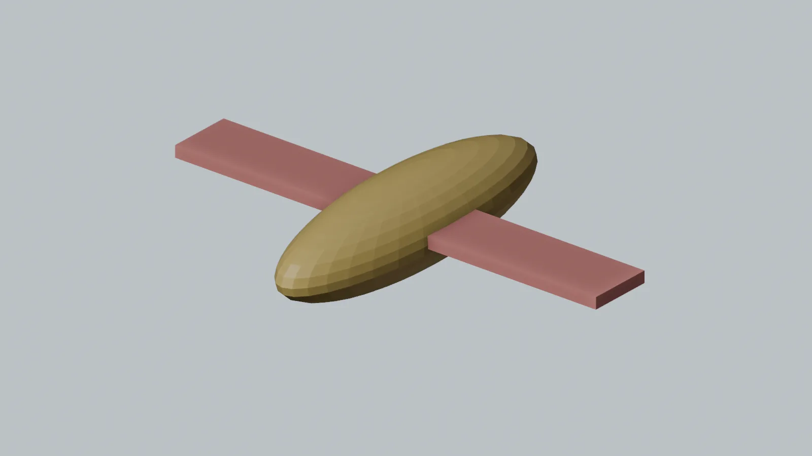
Раз — и крыльев два!
Зеркальная сторона повторяет форму исходного крыла.
Найди гаечный ключ
В Object Mode выбери именно крыло. В правой колонке Blender найди значок гаечного ключа — это вкладка Modifiers. Нажми Add Modifier → Generate → Mirror. Если меню трудно найти, взрослый помогает; ребёнок выбирает, когда показать отражение.
Покажи мне: Mirror и две стороны
Подсказки из Blender 5.2. Нажми на картинку, чтобы рассмотреть её крупнее. Твоя модель может выглядеть иначе.
Панель Add Modifier в Blender
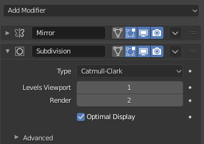
После выбора крыла открой справа вкладку с гаечным ключом. Вверху панели нажми Add Modifier. В списке Generate выбери Mirror; после добавления его название появится в панели, как на этом снимке.
Проверь: В панели есть строка Mirror. На модели можно увидеть отражённое крыло.
Источник: Blender Documentation Team · CC BY-SA 4.0
Mirror показал второе крыло
Выбери крыло. Справа открой вкладку с гаечным ключом (Modifiers), нажми Add Modifier → Generate → Mirror. Оставь включённой ось X. Второе крыло появится на другой стороне корпуса.
Проверь: Видны два крыла, хотя ты построил только одно.
Проверь ось X
У Mirror должна быть включена X — красная ось поперёк корпуса. Если отражение не видно, проверь с взрослым: 3D-курсор и оранжевая точка крыла должны быть посередине, а само крыло передвинуто в Edit Mode.
Покажи мне: ось X у зеркала
Подсказки из Blender 5.2. Нажми на картинку, чтобы рассмотреть её крупнее. Твоя модель может выглядеть иначе.
Измени исходное крыло
Нажми Tab, выбери форму крыла через A и чуть подвинь или удлини её. Посмотри: вторая сторона меняется вместе с первой. Если не понравилось, Ctrl+Z. Вернись в Object Mode через Tab.
Покажи мне: обе стороны меняются
Подсказки из Blender 5.2. Нажми на картинку, чтобы рассмотреть её крупнее. Твоя модель может выглядеть иначе.
Одна правка меняет оба крыла
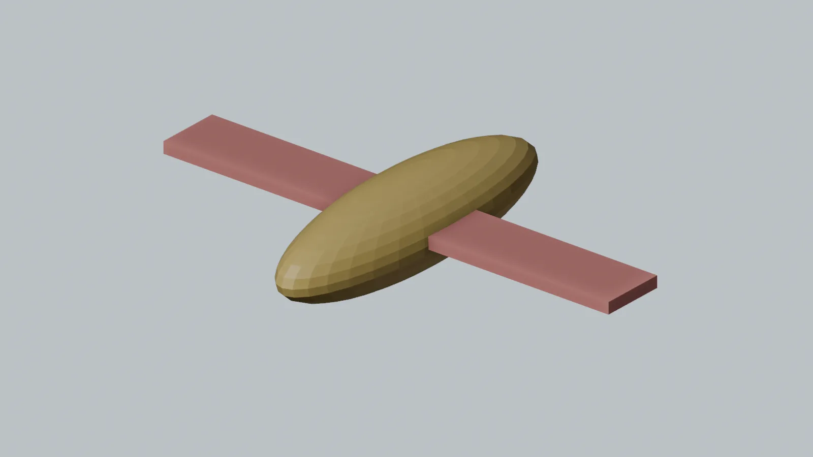
С выбранным крылом нажми Tab. Чуть измени форму или положение исходного крыла: зеркальная сторона повторит изменение. Ctrl+Z вернёт предыдущий вариант, если захочется.
Проверь: Вторая сторона повторяет первую автоматически — это и есть главное открытие недели.


Главный вопрос: сколько крыльев ты построил руками, а сколько появилось благодаря Mirror?
Что у меня получилось
Хвост, пилот и маршрут
Вернёмся к знакомым кубу и шару. Добавь одну деталь по своему выбору, проверь оба крыла и сохрани самолёт.
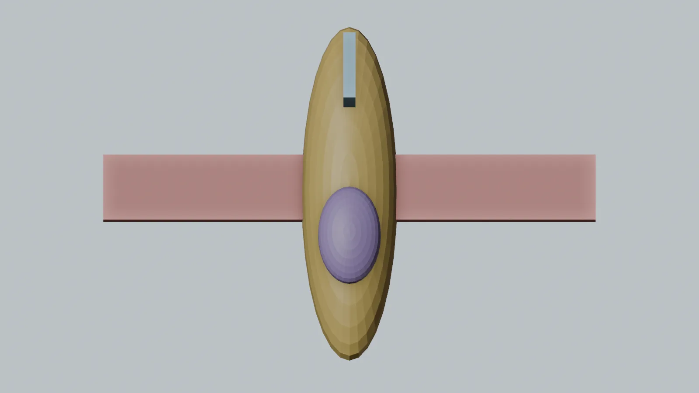
Облачный самолёт готов
Хвост и кабина помогают узнать самолёт, но могут быть совсем другими.
Поставь хвост
Убедись, что снова Object Mode. Добавь новый куб. Сделай его тонким и высоким через знакомые S и оси, затем подними через G, Z к задней части корпуса. Если устал, взрослый может поставить хвост, а ты решишь, какой он высоты.
Покажи мне: хвост
Подсказки из Blender 5.2. Нажми на картинку, чтобы рассмотреть её крупнее. Твоя модель может выглядеть иначе.
Хвост помогает узнать самолёт
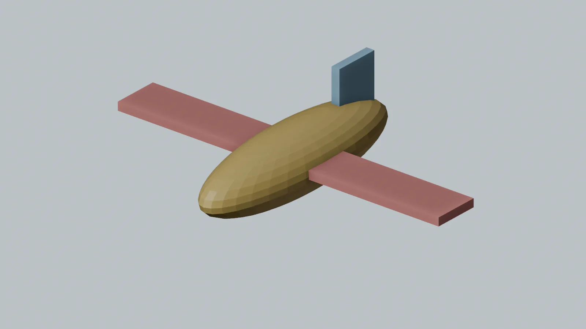
Вернись в Object Mode. Добавь отдельный куб, сделай его тонким и высоким, затем поставь сзади на корпус. Это хвост; Mirror для него не нужен.
Проверь: У корпуса есть хвост. Точное положение не обязательно.
Посади пилота — по желанию
Маленький UV Sphere сверху ближе к носу может стать кабиной. Уменьши его через S и передвинь через G. Можно вместо кабины придумать имя пилота и ничего больше не добавлять.
Покажи мне: кабина
Подсказки из Blender 5.2. Нажми на картинку, чтобы рассмотреть её крупнее. Твоя модель может выглядеть иначе.
Маленький шар стал кабиной
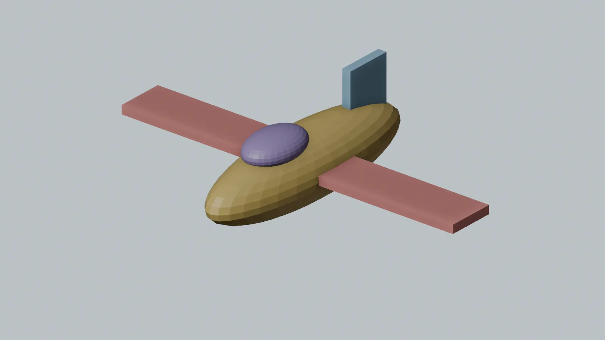
По желанию добавь UV Sphere, уменьши и поставь сверху ближе к носу. Взрослый может помочь с глубиной по Y.
Проверь: Пилоту есть куда сесть. Без кабины самолёт тоже готов.
Проверь и сохрани
Поверни вид, чтобы увидеть оба крыла. Покажи исходную и зеркальную стороны. Вместе со взрослым выбери File → Save As и сохрани plane.blend в знакомой папке. Если файл уже есть, подойдёт File → Save.
Покажи мне: готовый самолёт
Подсказки из Blender 5.2. Нажми на картинку, чтобы рассмотреть её крупнее. Твоя модель может выглядеть иначе.


Что у меня получилось
Ура, взлетаем!
Теперь ты умеешь делать симметричные детали: моделируешь одну сторону, а Blender помогает со второй. Где ещё пригодится такое зеркало — у робота, бабочки или космического корабля?
Для взрослых: подготовка и помощь
Неделя 5 добавляет одно профессиональное понятие — неразрушающую симметрию. Первая миссия повторяет масштабирование и перемещение. Во второй ребёнок меняет геометрию одного куба в Edit Mode, что сложнее прошлой недели. Третья показывает результат Mirror и связь между исходной и отражённой стороной. В 6–7 лет взрослый может нажимать клавиши и открывать вкладку Modifiers; ребёнок выбирает форму и объясняет, что поменялось. В 8–10 лет можно предложить выполнить часть шагов самостоятельно.
Перед началом
- Откройте Blender 5.2 LTS в Layout и новую сцену. Оставьте 3D-курсор в центре координат. Если он случайно сместился, Shift+S → Cursor to World Origin. Корпус создаётся из шара, а новое крыло — из отдельного куба в центре.
- Для Mirror критично сохранить origin крыла в центре. Добавьте куб там, войдите в Edit Mode и передвигайте геометрию крыла, а не весь объект в Object Mode. Mirror по X отражает меш относительно origin. На странице это показано после каждого нового действия. Справка Blender о Mirror — только для взрослого.
- Здесь используются кадры отдельной учебной сцены Blender 5.2.2 и один снимок панели из руководства Blender. Они показывают результат каждого действия; палитра в кадрах нужна для различения деталей и не требует добавлять материалы. При желании можно открыть подсказку, увеличить кадр и сравнить его со своим видом.
- Не требуйте точных чисел, идеально ровных крыльев, Apply, построения двигателей или реальной аэродинамики. Если клавиш слишком много, взрослый ведёт мышь, ребёнок выбирает длину крыла и говорит, какая сторона изменилась.
Что считать успехом
Ребёнок показывает корпус, исходное крыло и отражение, замечает, что изменение одного крыла влияет на второе, и сохраняет .blend. Хвост, кабина и история маршрута помогают закончить игрушку, но не заменяют открытие симметрии.